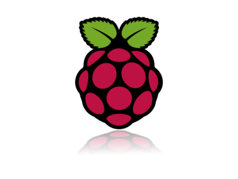
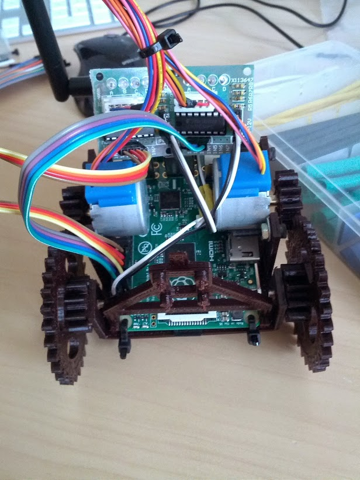
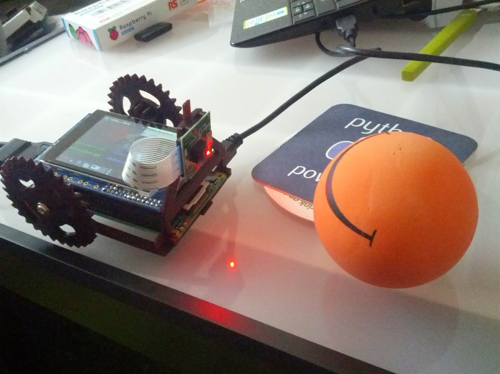

our AMS
Robot
by Johannes Magraf and Steffen TrösterAgenda
- actual autonomous task
- used hardware and software
- buildingprocess and our status
Task
"The robot should find and move a colored ball into a colored goal on a flat ground."
Used Hardware
- Raspberry Pi as controller 
- Raspberry Pi camera module
- stepper motor for movement
- 3D printed construction
Used Software
- python as programming language

- Raspbian linux as OS
- OpenCV for image processing

Building Process
- constructing elements for the printer
- Implementing object detection
- building our robot and implementing movement
- combining all together and implementing actual task

